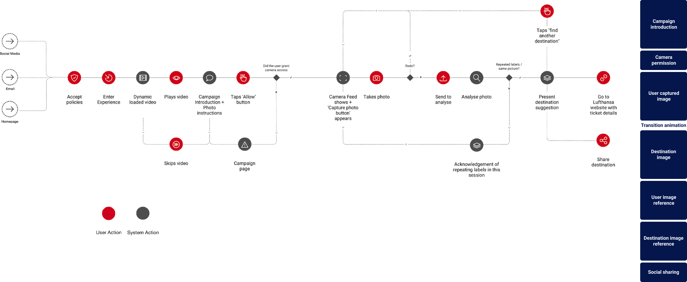
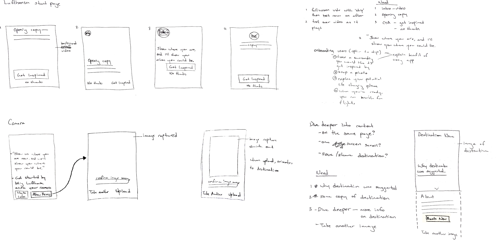
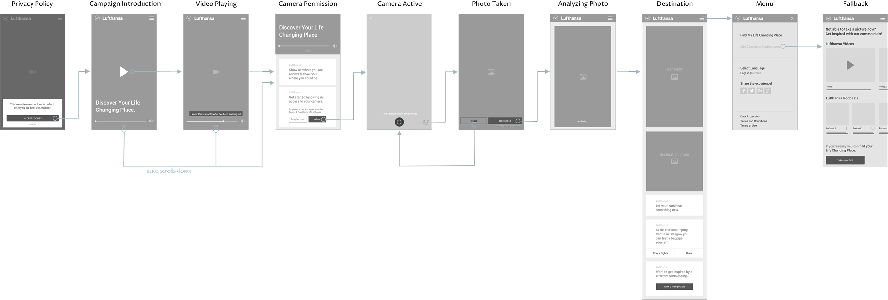
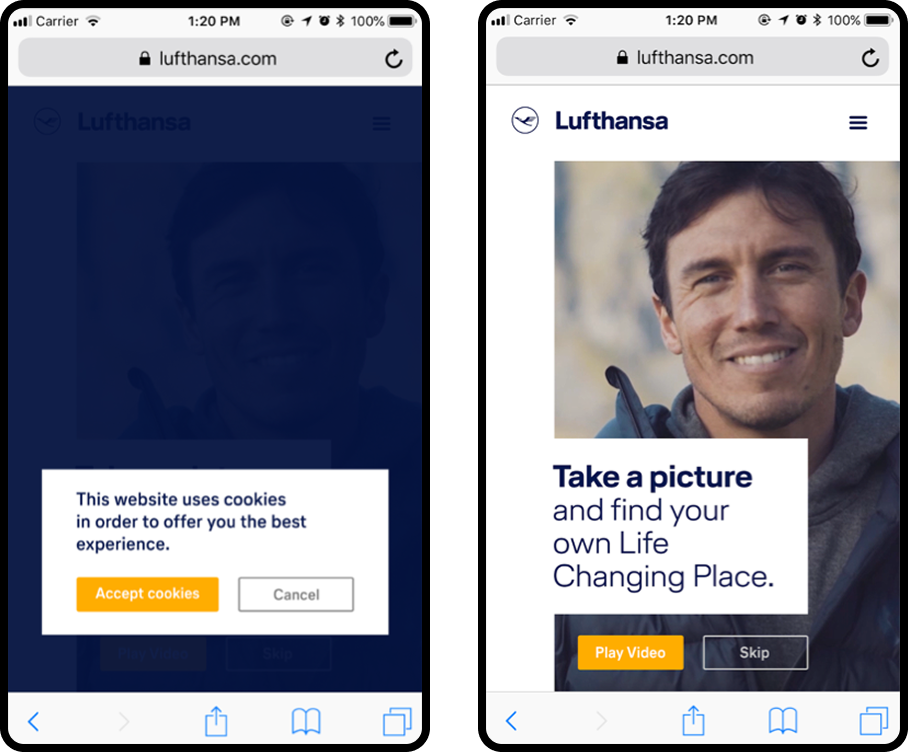
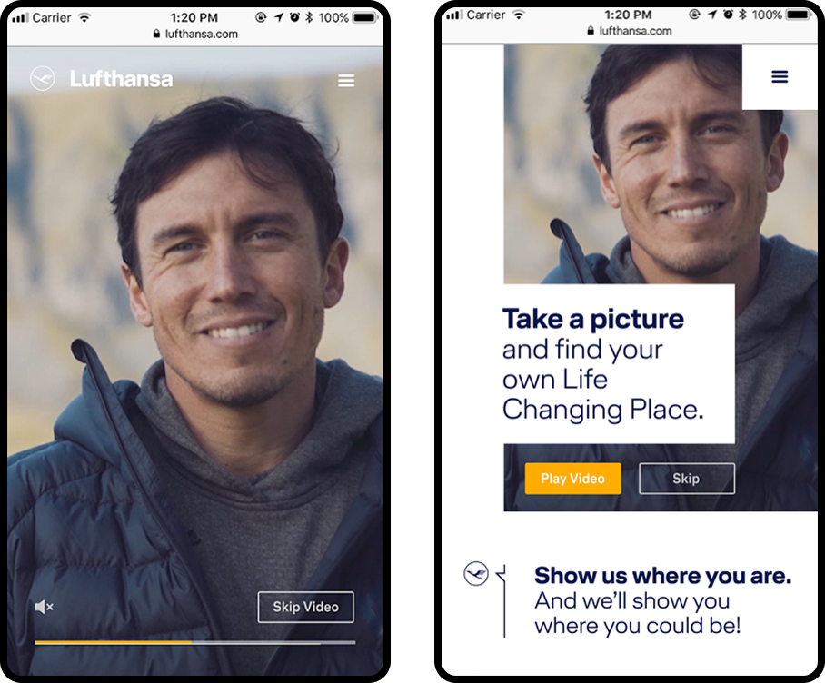
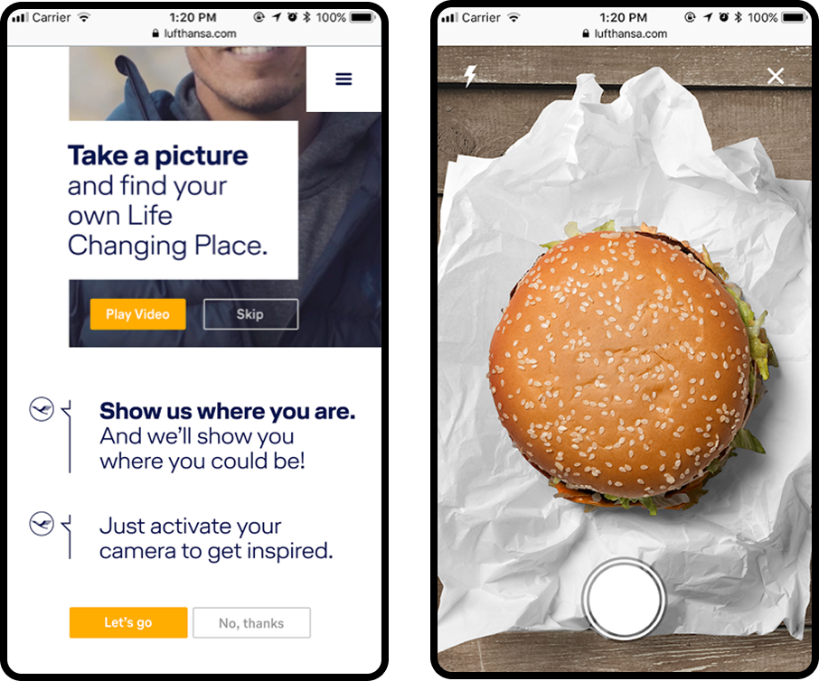
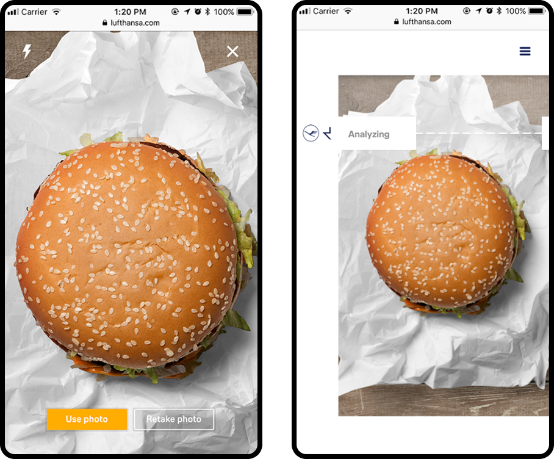
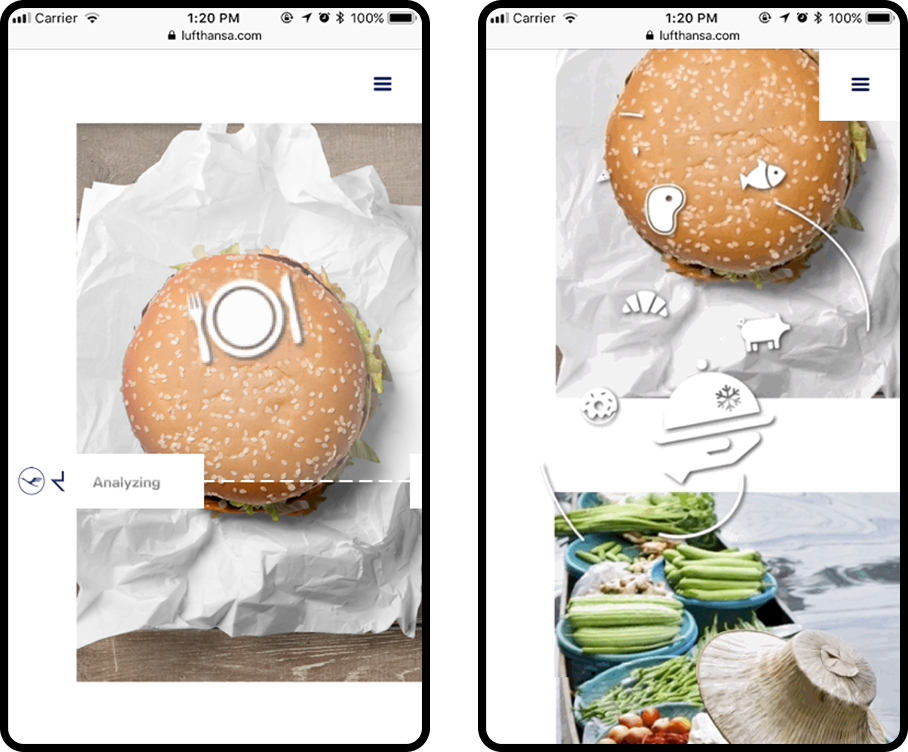
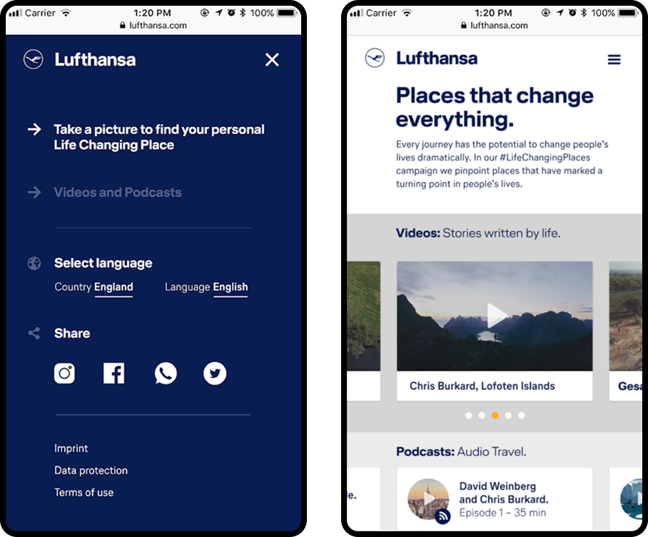

LUFTHANSA: #LIFECHANGINGPLACES
Lufthansa believes that travel has the power to transform. Their #LifeChangingPlaces campaign showcases that spirit by helping users discover meaningful destinations inspired by their current surroundings.
We built a mobile web app powered by Google Cloud Vision that prompts you to take a photo, then analyzes key visual cues to match you to a potential destination across Lufthansa's network. With a seamless, almost “magical” reveal, the app connects users to their next possible vacation.
- User Flow
- Prototyping
- Custom Content Management System
- 2019
User Flow
We designed a concise, friendly user flow that reflects Lufthansa's brand personality and encourages gentle, intuitive exploration.

The process

Sketching out the key screens

Wireframes
Final Designs






Reflection
What started as a content-heavy experience turned into something lighter and more curiosity-driven, which mirrored my own experience on this project. It was my first time working with Google Cloud Vision, and as I learned what it could do, I was able to shape some of the “magical” moments in the experience and help build a custom CMS to manage dynamic content.